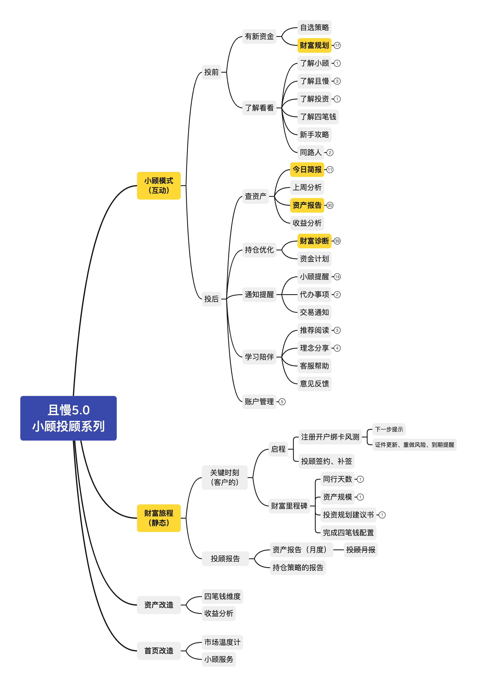
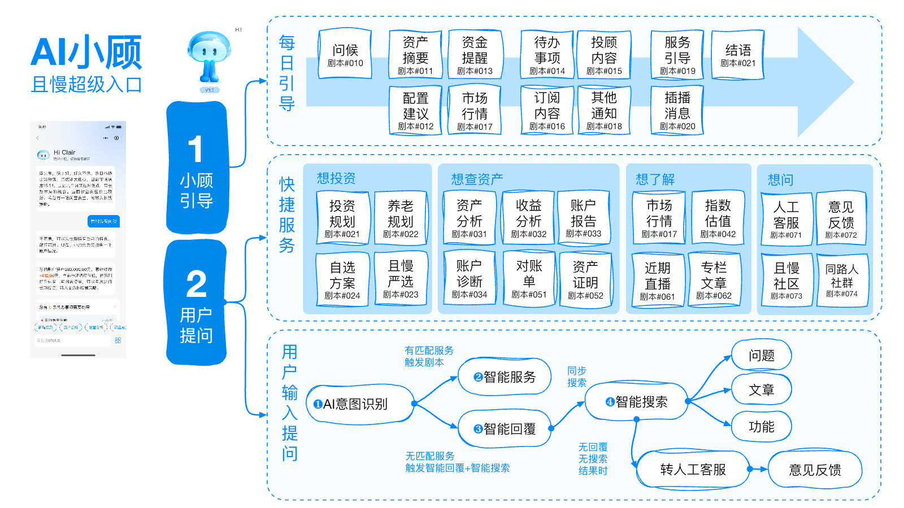
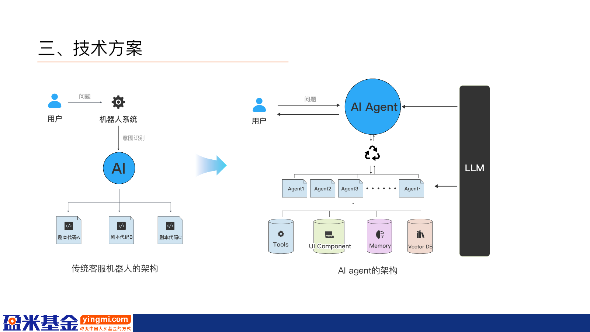
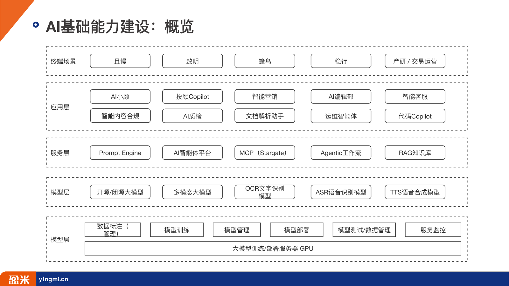
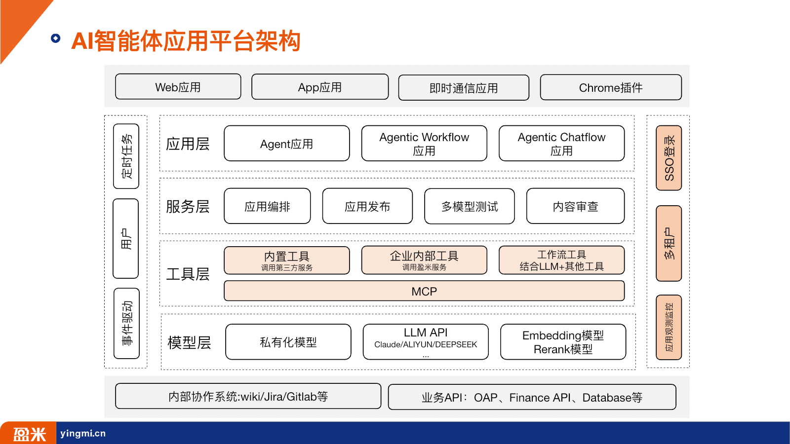
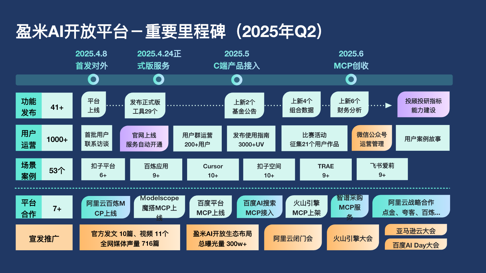
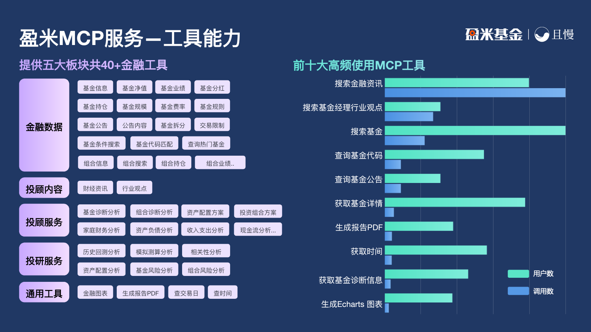
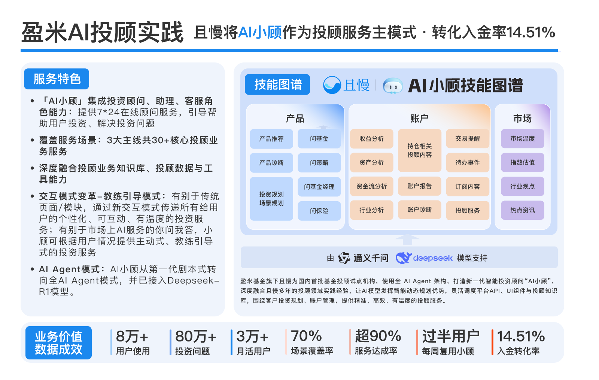
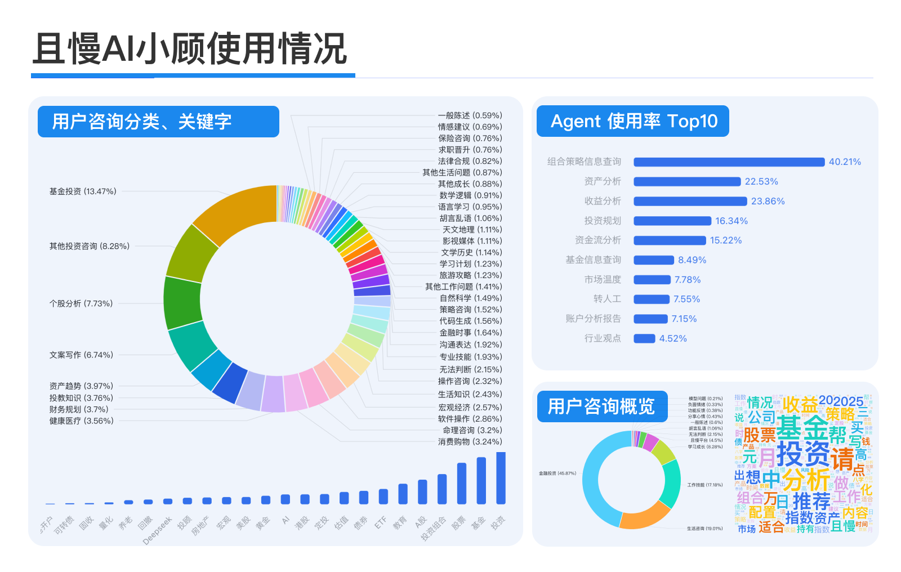

从功能入口，变成服务入口
2021 年已经定义了完整的投前、投后、财富旅程和账户管理，但用户仍要理解页面和模块。小顾把服务藏在对话与主动触发之后，用户只需表达目标。
“先有投顾服务系统，后有大模型；AI 的作用不是发明服务，而是让服务更容易被发现、组合和持续交付。”
从“投顾服务地图”到“金融服务操作系统”：拆解采用过的技术框架、五年代际、真实坑点、关键变化与价值，并区分已落地、阶段证据、规划与推断。
这不是“换了几个模型”的故事，而是服务组织方式、能力供给方式和价值验收方式连续换轨。
2021 年已经定义了完整的投前、投后、财富旅程和账户管理，但用户仍要理解页面和模块。小顾把服务藏在对话与主动触发之后，用户只需表达目标。
早期是“意图 → 剧本 / 场景 Bot”；随后变成“总指挥 → 专家 Agent → 工具 / 数据”，复杂问题不再要求事先穷举。
核心技术跃迁MCP、Skills、Agent、OAuth、审计与多端分发，让同一项基金、账户或规划能力可以在小顾、顾问工作台和外部 AI 入口复用。
组织与商业跃迁持仓、收益、资金流、风险偏好与交易状态，让回答从“金融百科”变成“与我有关”。
四笔钱、规划、诊断、陪伴与合规边界，构成可被模型调用的专业 SOP。
模型负责理解与解释，计算、查询和业务动作交给确定性服务。
结果、采纳、失败和反馈回流，才让一次问答变成可复用服务资产。
“采用过”按证据分级：产品原型、生产日志、正式汇报、代码/生产注册表、规划讨论。日期是材料或里程碑日期，不强行等同公开版本号。
小顾模式、财富旅程、投前规划、投后诊断、通知陪伴、SCRM。
产品原型 · 非 LLM私有化 LLM、知识库、AI 团队；“在线投资顾问 / 超级入口”成形。
基础设施 + 产品方案意图识别、剧本路由、31 个 Bot、RAG、真实账户与基金数据。
生产日志可证Dify、Cursor；Qwen / DeepSeek-V3 / R1，多模型选择，深度思考。
产品与平台换轨Stargate、开放工具、RAG 引用、ECharts / PDF、渠道注册与治理。
生产渠道可证Skills、A2A、记忆、事件触发、OAuth、Agent runtime、VPC。
部分上线 + 当前建设2021 年的原型已经包含投前、投后、财富旅程和账户管理。这个骨架后来被 AI 重新编排，却没有被替代。

互动服务负责当下问题，静态旅程负责开户、签约、里程碑与月度报告。它本质上已经是一个事件驱动的投顾服务蓝图。
活钱、稳钱、长钱、保障把用户目标、风险、流动性和产品匹配连接起来，后来成为模型解释、工具调用和卡片输出的共同语义。
模块越多，导航和运营配置越重；用户不知道去哪、怎么问、下一步是什么。AI 小顾最初要解决的正是“发现服务”的成本。
信息架构债下面把产品、模型、数据、工具、治理和分发放到同一张图里。越靠左越稳定，越靠右越接近用户与经营结果。
四笔钱、规划、诊断、陪伴、合规话术、人工接力。
最早形成，最不该被模型绑架账户持仓、交易、基金与行情、投研内容、RAG、引用溯源。
决定“与我有关、言之有据”查询、计算、图表、报告、业务 SOP 与质量门。
把模型判断落到确定性能力意图识别、问题拆分、总指挥、专家 Agent、工作流与人工确认。
从“匹配答案”升级为“完成任务”卡片 / 报告 / 动作 / 持续任务；App、微信、千问、顾问工作台；审计与计量。
最终价值发生在这里横向控制面：身份与授权、Scope、敏感字段、内容审查、版本、监控、成本、审计、SLA。没有这层，金融 Agent 只是一个好看的 Demo。
“共享平台采用”不自动等于“小顾每条链路都在用”。表中明确区分直接证据、平台共用、目标态与未证实。
| 层 | 框架 / 技术 | 解决什么 | 小顾中的形态 | 证据状态 | 主要代价 / 坑 |
|---|---|---|---|---|---|
| 产品编排 | 剧本、场景 Bot、Intent Router | 把自然语言映射到既有服务 | QM-* Bot；TRANSFER_TO_BOT；快捷入口 / 自动引导 | 生产日志 | 场景爆炸、误分类、维护重 |
| 应用后端 | Node.js | 承载会话、编排、网关和工具服务 | 小顾后端与 Stargate 均有 Node.js 证据 | 正式材料 / 代码审计 | 异步链路长，错误归因难 |
| 编排框架 | LangChain | 意图 → 拆解 → 工具调用 | 30+ Agent 的早期编排核心 | 2025 技术方案 | 黑盒链路、版本与观测成本 |
| 实时交互 | SSE / Streamable HTTP | 逐步返回思考、工具进度与答案 | 小顾实时推送；MCP 客户端到 Stargate | 技术方案 / 代码审计 | 断线重连、中断、重复事件 |
| 模型层 | 私有化 LLM + 云端多模型 API | 在质量、速度、成本、隐私间路由 | Qwen、DeepSeek-V3、DeepSeek-R1；平台材料含 Claude / 阿里云等 | 小顾明确 3 类；平台更广 | 能力差异、供应商依赖、回答漂移 |
| 知识层 | RAG、Embedding、Rerank、知识库 | 让答案基于可信内容并可溯源 | 文章 / FAQ / 业务知识库 / 研报 / 外部内容；按句引用 | 产品与平台材料 | 切片、召回、过期内容与引用错配 |
| 低代码 | Dify | 让业务参与 Agent / Workflow 搭建 | 平台共用；20+ Agent、120+ 节点案例主要来自 AI 图书馆 | 共用平台，非小顾全链实证 | 工作流膨胀、测试与迁移困难 |
| 工具协议 | MCP / OpenAPI / Stargate | 标准化暴露数据、算法、工具与业务动作 | xg3-common 89 工具；xg3-card 15 工具（2026-08-31 快照） | 生产注册表审计 | Schema / Wiki / 实现漂移，渠道数口径混乱 |
| 可复用服务 | Skills | 封装 SOP、脚本、模板、质量检查 | 从工具调用走向稳定任务交付 | 已进入 OAP 建设；小顾深化中 | 系统 Skill 与用户 Skill 边界 |
| 智能体互联 | A2A / Agent runtime | 把完整小顾能力带到外部 Agent | 千问 A2A、微信 Agent；自有 runtime 规划 | 合作联调 / 部分目标态 | 跨平台身份、状态、记忆和失败回收 |
| 输出层 | ECharts / HTML→PDF / 标准卡片 | 把事实、图表、结论与动作一起交付 | RenderEchart、RenderHtmlToPdf、报告 Skill | 生产工具 / 场景材料 | 漂亮输出不等于数据正确 |
| 治理层 | API Key → OAuth / SSO / Scope / Audit | 识别平台、客户端、用户与授权范围 | Stargate OAuth AS、双轨过渡、调用审计 | 生产设施 + 持续治理 | 授权成功不等于工具可用；隐私与追踪冲突 |
| 智能能力 | OCR / ASR / TTS / 多模态 | 读文件、语音交互与多模态输入 | 平台能力栈；小顾需求含附件与语音 | 平台采用；小顾全量落地未证实 | 数据合规、解析误差、成本 |
| 训练评估 | 标注、SFT、GRPO、评测集 | 增强金融知识与 Agent 规划能力 | 盈米全栈 AI 规划；小顾效果通过反馈与小样本脚本迭代 | 平台路线 / 局部实践 | 离线分数与真实任务价值脱节 |
2023 年方案把小顾定义为且慢超级入口：主动引导、意图识别、智能服务、智能回复与搜索。2023.12—2024.06 日志证明这套架构真实运行。

用户输入 / 快捷菜单 / 自动引导 → 意图识别 → 场景路由 → 专用 Bot → 真实数据接口 → 结构化回答或人工接力。
单个 Bot 擅长一个问题，但复杂任务会跨越市场、产品、账户、风险和规划。Agent 化的核心是允许系统动态拆解并调度专家。
提前列出意图和剧本，命中后转专用 Bot。稳定、可控，但新问题需要继续加分支。
模型理解目标、拆步骤、选择工具与专家，必要时并行处理，再综合成答案或任务结果。

通用 Qwen 负责常用投资咨询，DeepSeek-V3 作为同类通用模型，R1 面向复杂深度问题。模型切换不是“谁更聪明”，而是质量、时延、成本与可用性的路由。
这是金融 AI 最重要的分工：语言模型负责理解与表达，知识库提供可追溯上下文，确定性工具负责查询、计算和动作。
原始内容切片 → 语义检索 → 相关段落 → 大模型总结 → 逐句引用与原文跳转。
降低幻觉收益、回撤、四笔钱、风险测评、资金流、订单与持仓。
提供个性化事实基金详情、诊断、相关性、回测、蒙特卡洛、市场温度与指数估值。
把判断落到数据图表、HTML、PDF、报告模板与行动卡片。
把答案变成交付物2025.04 起，能力不再只服务小顾。数据、算法、工具和内容通过开放平台注册、分组、授权、审计和分发。
客户端通过 SSE / Streamable HTTP 获取工具 Schema 并调用；Stargate 动态生成工具清单、转发上游并记录成功调用。
大部分出参由上游决定，少数路由用 wrapper 脚本裁剪、转换或注入文案；还包含限流、额度、编码和错误处理。
2026-08-31 快照：小顾 3.0 通用渠道 89 工具、卡片渠道 15 工具。69 是阿里百炼渠道资产数，不是全平台总数。




好的 AI 产品不是不断把复杂度推给模型，而是把复杂度搬到最适合承担它的层。
复杂度从用户导航迁到意图理解与服务编排。
开场、资产摘要、待办、市场温度和在途资金成为服务触发点。
从解释概念，走向读取数据、拆解问题、调用工具、生成报告和追问修正。
从穷举意图变为动态规划，新增场景的成本从“重做链路”降为“复用能力”。
速度、成本、深度和可用性按任务权衡，而不是用一个模型包打天下。
记什么、保留多久、何时更新、能否撤回，必须成为产品与合规规则。
数据与 SOP 被标准化为可鉴权、可测试、可复用、可计量的服务资产。
从“谁拿到 Key 都一样”转向识别平台、客户端、用户和授权范围。
市场、持仓、任务状态变化触发服务，更精准，也减少无效轮询与 Token 消耗。
调用、曝光和消息数只是过程；结果采纳、任务完成、复用与合规才是价值。
历史材料里存在不同时间与口径的数字。这里保留证据边界，不把不同快照拼成虚假的连续增长。
把功能、内容、数据和顾问方法组织成“下一步”，减少不知道问什么、去哪找、怎么判断的成本。
从账户问题、产品判断和市场解释自然进入规划、投顾服务与行动，但必须以归因链而非相关性证明。
Prompt、规则、脚本、模板、质量门和数据接口可以沉淀成 Skill，而不只存在于个别同事脑中。
同一能力可以服务小顾、顾问工作台、微信、千问与机构 Agent，减少重复开发和重复口径。
金融建议不仅要“像对的”，还要知道读取了什么、调用了什么、哪一版、谁确认过。
小顾验证服务价值，OAP 把能力资产化，外部入口与机构场景再放大分发和商业机会。
每个坑都给出根因与更优解。这里既包含历史实证，也包含从生产架构直接推导出的高风险点。
对话只是入口，真正价值在服务、工具、数据与动作。
根因：以 UI 定义产品解法：以成功服务任务定义产品31 个 Bot 能覆盖高频需求，也会带来路由、提示词、回归和版本爆炸。
根因：用分支对抗长尾解法：黄金场景固定，长尾交给动态编排点赞分析把 45% 归为“其他”；其进一步拆分比例并无原始标注证据。
根因：分类体系与真实问题脱节解法：人工抽样重标 + 在线混淆矩阵R1 能思考更久，却可能拿不到稳定投资信息；没有工具链，推理越长越像幻觉。
根因：把知识与计算都压给模型解法：模型规划，工具取数，规则校验召回旧内容、切片断义或引用错配，仍会产生“有出处的错误”。
根因：把引用当真实性证明解法：时效、适用性、数字三道校验收益、回撤、市场温度、热门基金等关键逻辑大量只在代码或网关脚本。
根因：文档不在发布链路解法：从生产快照自动生成口径手册29、41+、50+、69、89、15、数千注册路由对应不同渠道与定义。
根因：资产、工具、渠道、版本混算解法：统一 Tool ID + 渠道可见集 + 版本字段裁剪、日期转换、15 点过滤和文案注入藏在生产脚本里。
根因：适配逻辑脱离契约解法：声明式转换 + 版本化测试样例OAuth 回调、工具列表、后端批准、Scope、真实调用是五个不同状态。
根因：把连接过程当结果解法：最小只读任务端到端验收计划、并发、重试和综合会放大 Token、时延与失败面。
根因：每个问题都走重编排解法：路由分级 + 缓存 + 确定性短路错误、过期、敏感或越权记忆会长期影响建议。
根因：把上下文存储等同用户记忆解法：分层、可见、可改、可撤、可过期图表和 PDF 可能正确渲染，却仍有数据口径、适用性与合规问题。
根因：把输出完成当业务完成解法：证据、复核、采纳和后续动作闭环从一次对话跨到长期关系，需要状态、记忆、触发、动作、授权和回写六件事同时成立。
持仓、目标、风险、计划、任务、历史结果与用户授权。
不是每天轮询，而是条件、指标或事件达到阈值时触发。
调用 Skill / MCP / Agent，生成解释、卡片、报告或待确认动作。
记录用户采纳、修改、失败原因与偏好，形成下一次服务上下文。
未来 90 天最值得做的不是扩模型或扩工具，而是把契约、状态与验收打牢。
每个服务明确：输入、授权字段、数据截止、工具版本、计算口径、输出组件、允许动作、失败兜底、人工确认、反馈回写。卡片、报告、Skill、Agent 都引用同一契约。
统一 pending / running / waiting-user / waiting-human / failed / completed；支持幂等、重试、超时、补偿和断线续跑。SSE 只是展示层，不应承担状态真相。
发布时自动导出人可读接口手册、Golden Case 与变更日志；wrapper 改写必须声明并进入回归测试，彻底收口 Wiki / Schema / 代码漂移。
把“可读取、可写入、可保留、可触发、可外发”变成可配置策略；用户能看、改、删，敏感信息默认短期，跨端共享必须重新确认。
优先验收持仓诊断、收益解释、资金计划、市场影响、家庭财务规划等任务；同时串起入口 → 授权 → 成功任务 → 采纳 → 动作 → 交易 / AUM / 留存。
共享规则、Skill、评测和版本治理留在控制面；客户数据、模型与执行留在私有数据面。通过能力清单和兼容矩阵降低每个 VPC 成为独立分叉的成本。
本报告最重要的不是内容多，而是拒绝把原型、宣传、连接成功和生产完成混成同一个结论。
31 Bot、49,495 事件、小顾 3.0 两个渠道、Stargate 链路与字段口径。
LangChain、Node.js、SSE、多模型、30+ Agent、RAG 引用与知识库。
使用量、解决率、转化、案例效果；需要补周期、分母、基期与去重口径。
代表方向与设计约束，不代表全部已上线或已规模验证。

